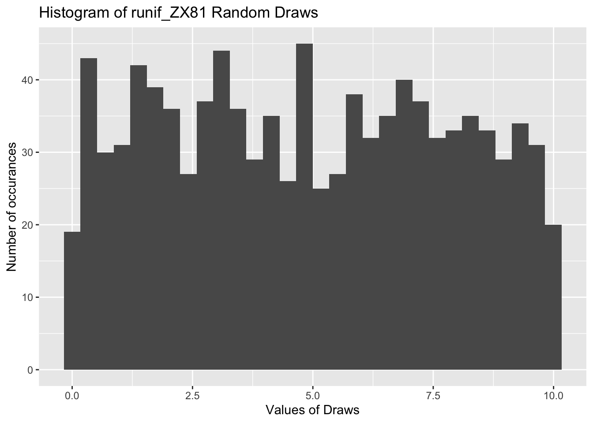
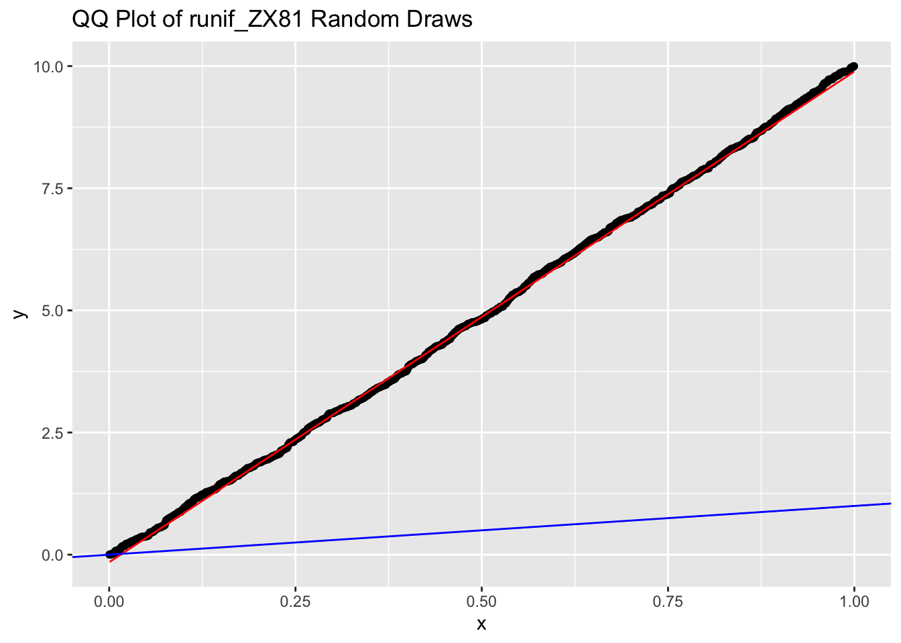
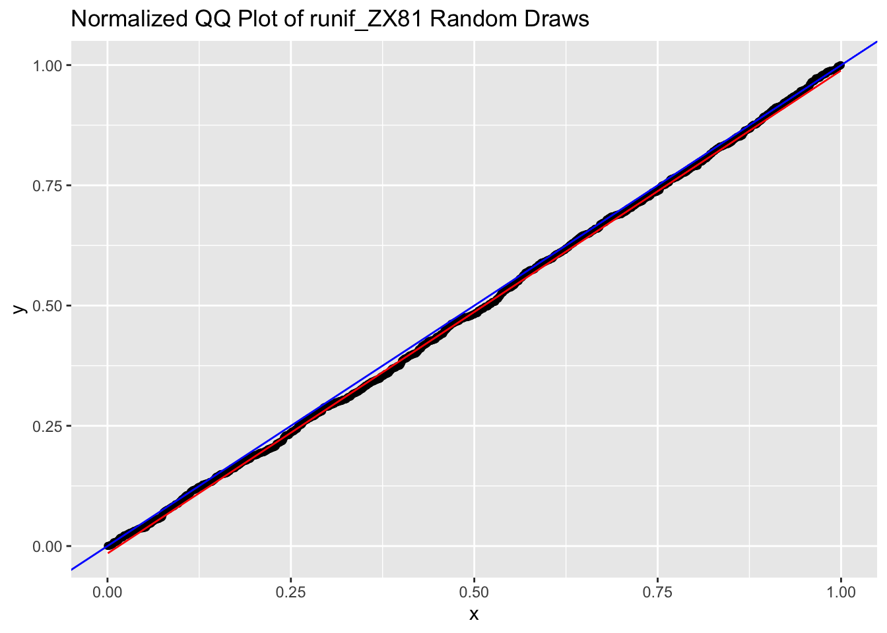
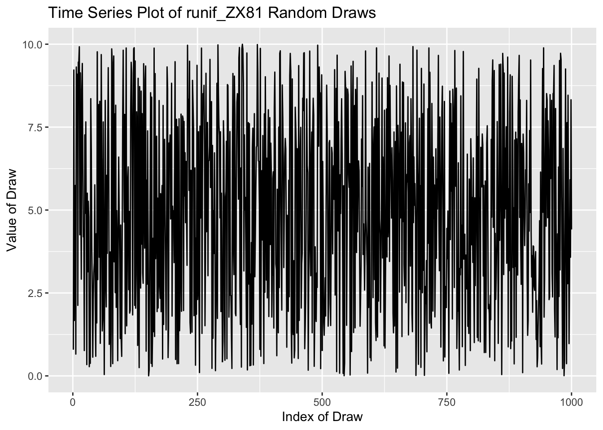
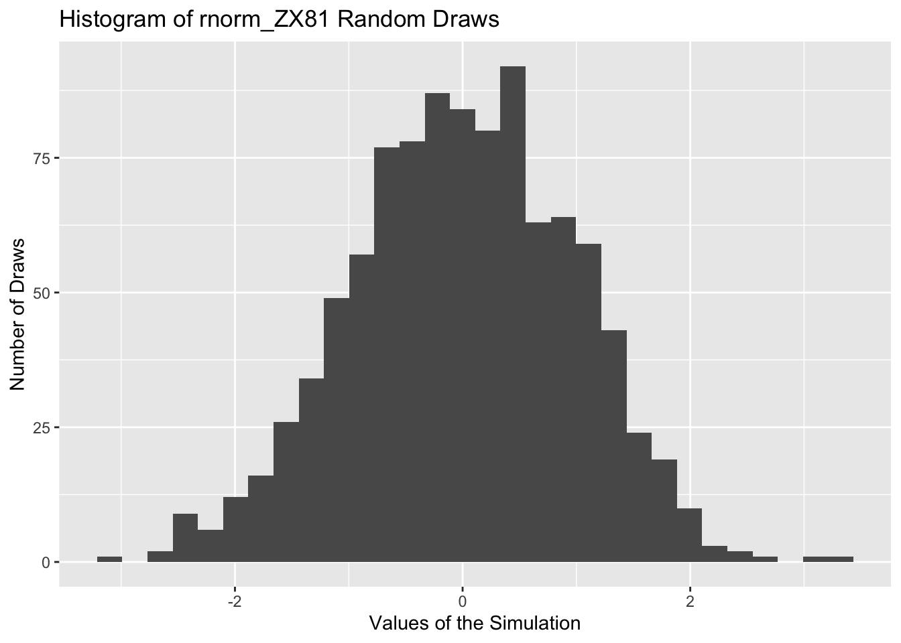
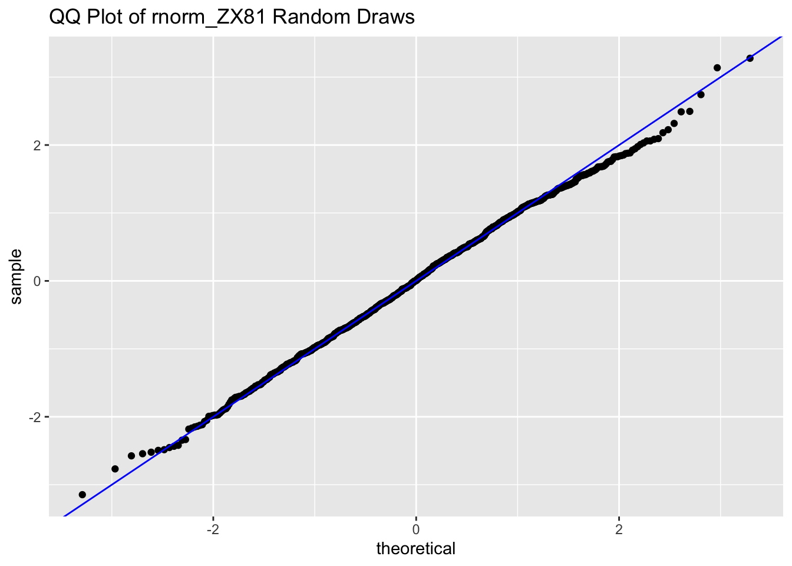
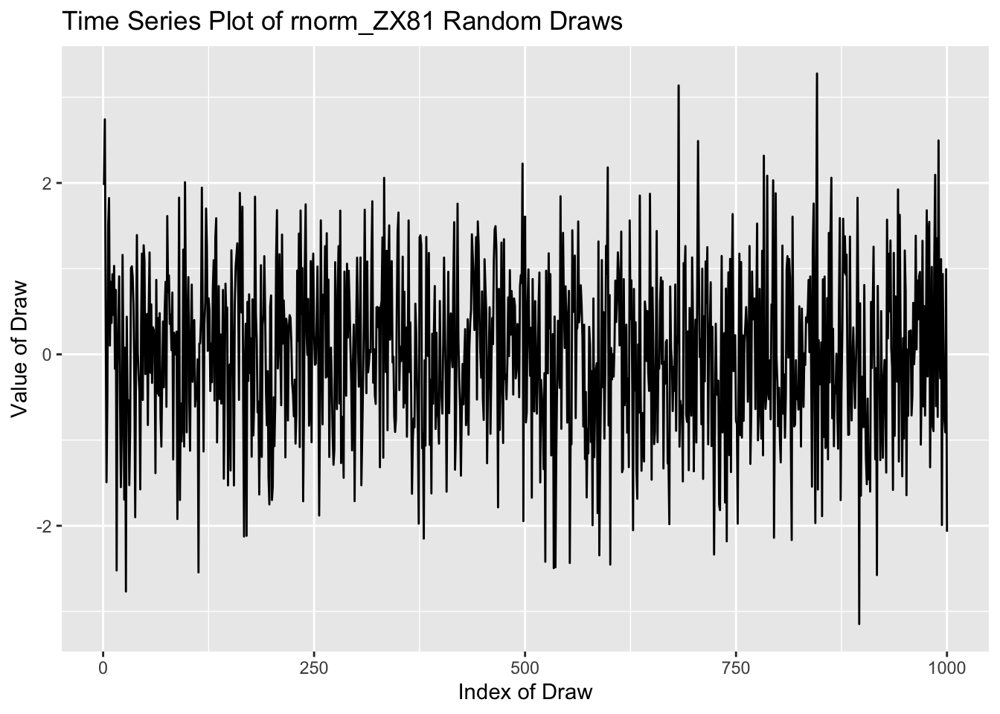

runif_zx81 <- function(seed, n, min, max) {
# Setting the parameters and initial seed
m <- 2^16 + 1
a <- 75
x <- seed
# Generating an empty vector
random_numbers <- numeric(n)
# Writing a for loop to calculate each value using the Lehmer formula, scaling the value, then storing it in the random_numbers matrix
for (i in 1:n) {
x <- (a * x) %% m
x_scale <- min + (max - min) * (x / m)
random_numbers[i] <- x_scale
}
random_numbers
}Monte Carlo On a Desert Island
Core Empirical Research Methods - Summer Work
Q1
a)
b)
Testing for this runif generator
unif_sim <- runif_zx81(69, 1000, 0, 10)
mean(unif_sim)[1] 4.907436On first glance just by taking the mean it seems like this would apprach the mean for a similar uniform distribution. Making a histogram:
tibble(unif_sim) |>
ggplot(aes(x = unif_sim)) +
geom_histogram(bins = 30) +
labs(x = "Values of Draws", y = "Number of occurances", title = "Histogram of runif_ZX81 Random Draws")
This seems reasonably uniformly distributed except the end points, take less values than the other values. Now making a qqplot:
tibble(x = unif_sim) |>
ggplot(aes(sample = x)) +
geom_qq(distribution = qunif)+
geom_qq_line(col = "red", distribution = qunif) +
geom_abline(slope = 1, intercept = 0, col = "blue") +
labs(title = "QQ Plot of runif_ZX81 Random Draws")
This simulation has the same distribution as the uniform distribution as they are on the same line (red line), which means the quantiles of the observed data agree with those of a transformed uniform distribution. If we standardize the data before making such a plot (making the min and max (0,1)), then we get a 45 degree line (blue line):
unif_sim_sd <- runif_zx81(69, 1000, 0, 1)
tibble(x = unif_sim_sd) |>
ggplot(aes(sample = x)) +
geom_qq(distribution = qunif)+
geom_qq_line(col = "red", distribution = qunif) +
geom_abline(slope = 1, intercept = 0, col = "blue") +
labs(title = "Normalized QQ Plot of runif_ZX81 Random Draws")
Now making the time-series plot:
tibble(Index = 1:1000, Value = unif_sim) |>
ggplot(aes(x = Index, y = Value)) +
geom_line() +
labs(x = "Index of Draw", y = "Value of Draw", title = "Time Series Plot of runif_ZX81 Random Draws")
There does not seem to be any clustering or gaps, the variance around 5 all seem constant and pure noise without much persistence.
Q2
a)
We first need to create two independent uniform RV from two different seeds to make sure that they are indepdnent of one another. This is becasue the same seed number affects the sequence of psedo-random numbers generated by the ZX81 random number generator. We end up just having to use one of the two standard normal simulations:
rnorm_zx81 <- function(seed, n, mean, sd) {
u1 <- runif_zx81(seed +1, n, 0, 1)
u2 <- runif_zx81(seed, n, 0, 1)
R <- sqrt(-2 * log(u1))
theta <- 2 * pi * u2
z1 <- R * cos(theta)
z1
}
rnorm_zx81(69, 10, 0, 1) [1] 1.9760262 2.7418138 0.4998739 -1.4911231 -0.5213273 1.5138666
[7] 1.8235343 0.1026315 0.8463807 0.3671726b)
norm_sim <- rnorm_zx81(69, 1000, 0, 1)
mean(norm_sim)[1] 0.00163546sd(norm_sim)[1] 0.9741741At first glance the mean and standard deviation seems reasonable given a large sample size. Let’s make some plots similar to the first question of this worksheet.
tibble(norm_sim) |>
ggplot(aes(x = norm_sim)) +
geom_histogram(bins = 30) +
labs(x = "Values of the Simulation", y = "Number of Draws", title = "Histogram of rnorm_ZX81 Random Draws")
Note to self: it is very frustrating that I do not know how to overlay a normally distributed curve on this histogram (nothing seems to work)
tibble(x = norm_sim) |>
ggplot(aes(sample = x)) +
geom_qq()+
geom_abline(slope = 1, intercept = 0, col = "blue") +
labs(title = "QQ Plot of rnorm_ZX81 Random Draws")
Overall this lines up with the 45 degree line well for values of x from [-2,2].
tibble(Index = 1:1000, Value = norm_sim) |>
ggplot(aes(x = Index, y = Value)) +
geom_line() +
labs(x = "Index of Draw", y = "Value of Draw", title = "Time Series Plot of rnorm_ZX81 Random Draws")
Overall this time series plot centers around 0, has constant variance and at no point are the values persistently higher or lower than 0.